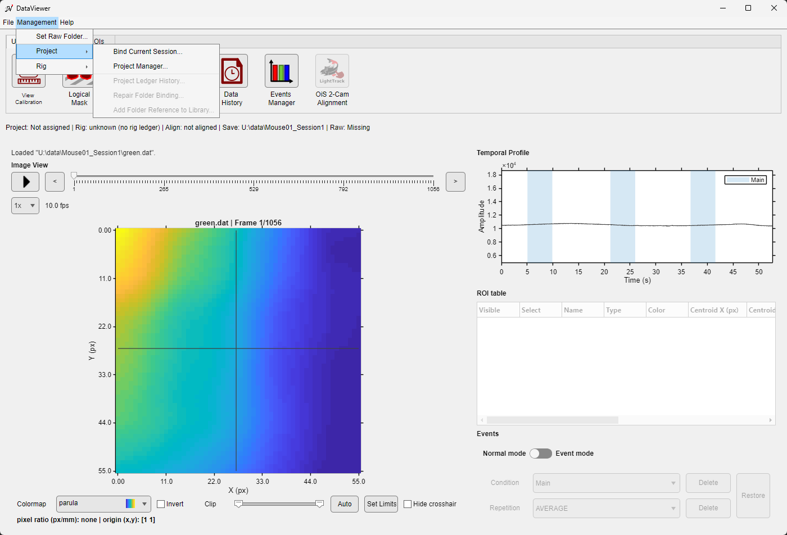
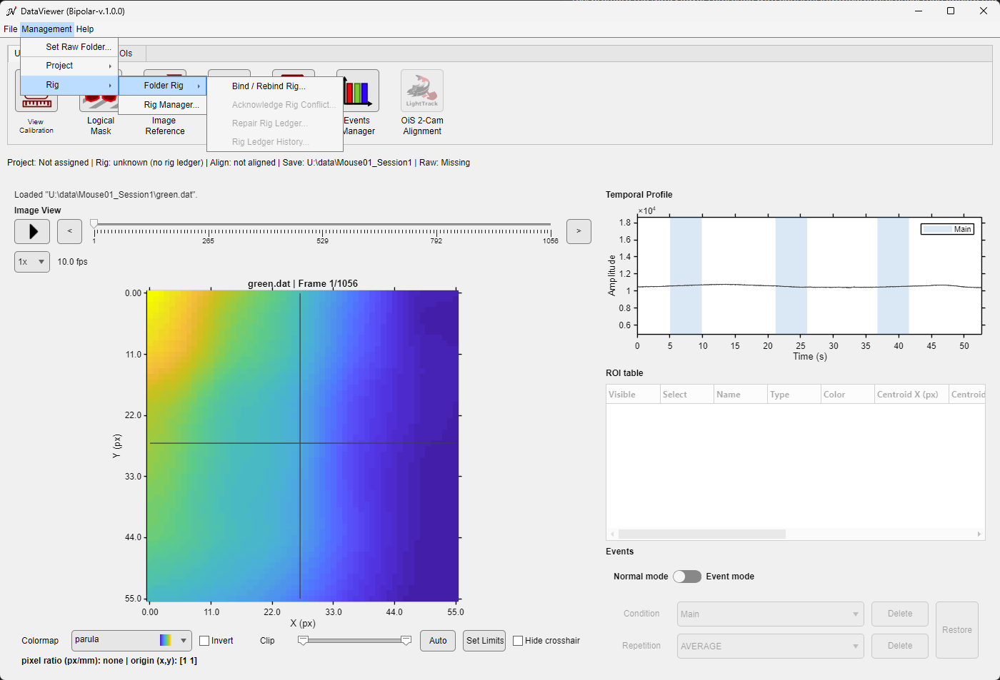

The image and navigation controls are on the left; the temporal plot, ROI table, and event controls are on the right.
The image and navigation controls are on the left; the temporal plot, ROI table, and event controls are on the right.
The image panel displays the selected frame. Clicking a pixel moves the crosshair and updates the black temporal trace. The plot also shows colored traces for visible ROIs. The table below it controls ROI visibility, selection, names, colors, geometry, and current-frame measurements. Event controls become available when the Save Folder contains usable events.mat information.
The File menu.
The Management menu separates routine folder, project, and rig association from File operations.


| Control | Available when | Effect and persistence |
|---|---|---|
| File > Open | Always | Opens .dat or image-kind .umt; read-only. |
| File > Save as... | Data is loaded | Saves the current data under a chosen supported name. |
| File > Import > from .bin / from .tif | Always | Imports raw data into a Save Folder with ImagesClassification or importFromTif. When the Save Folder already holds an import, a dialog first lists what the fresh import deletes and keeps (Continue / Cancel). |
| File > Export > to tif | A .dat file is loaded | Writes TIFF output with ConvertToTiff; the source remains unchanged. .umt files cannot be exported. |
| File > Batch pipeline... | Always | Opens Pipeline Manager in batch mode, for several folder pairs. See Batch mode. |
| File > Preferences... | Always | Opens the DataViewer preferences. |
| Management > Set Raw Folder... | Data and an accessible Save Folder | Stores a selected path, the Save Folder itself, or Missing in DataParams.mat. |
| Management > Project > Bind Current Session... | Data and an accessible Save Folder | Opens Project Binding Manager with the current Save Folder. See Project management and folder binding. |
| Management > Project > Project Manager... | Always | Opens the full project-administration interface. |
| Management > Project > Project Ledger History... | The folder has a project ledger | Shows the binding history of the folder, read-only. |
| Management > Project > Repair Folder Binding... | The folder's project binding has a problem | Offers the repair that fits the problem (project missing on this computer, stale link, conflict or invalid ledger). |
| Management > Project > Add Folder Reference to Library... | The folder is bound to a project session | Offers to add the folder's alignment reference to the subject's reference library. |
| Management > Rig > Folder Rig > Bind / Rebind Rig... | Data is loaded | Binds the Save Folder to a rig of the library, or changes its rig. See Folder rig. |
| Management > Rig > Folder Rig > Acknowledge Rig Conflict... | The folder is in a rig conflict | Accepts the current rig for the folder, with an optional comment. |
| Management > Rig > Folder Rig > Repair Rig Ledger... | The folder's rig ledger is invalid | Moves the invalid ledger file aside so that a rig can be bound again. See Folder rig. |
| Management > Rig > Folder Rig > Rig Ledger History... | The folder has a rig ledger | Shows the rig history of the folder, read-only. |
| Management > Rig > Rig Manager... | Always | Opens the full rig-administration interface (the rig library). |
| Help > Online documentation | Always | Opens the documentation site. |
| Tab | Control | Use |
|---|---|---|
| Utilities | View Calibration | Set pixel scale and coordinate origin. See Image calibration. |
| Logical Mask | Draw, automatically create, preview, confirm, or reset the analysis mask. | |
| Image Reference | Create and manage reference images: in a subject's library when the folder is bound to a project, or as standalone reference files without a project. See Image Reference Manager. | |
| Alignment Tool | Align the current recording to a reference image (from a subject library, a UMIT .dat file or a reference file). A project is not required. See Image Alignment Tool. | |
| Data History | Inspect the processing steps and parameters that produced the current file. | |
| Events Manager | Detect and name events and create events.mat. See Events Manager. | |
| OiS 2-Cam Alignment | Calibrate dual-camera alignment when multi-camera metadata is present. See Dual-Camera Coregistration. | |
| Pipeline | Pipeline Manager | Build and run processing graphs. The tab also summarizes the current graph file, status, last output, and most recent run. See Pipeline Manager. |
| ROIs | Rectangle / Ellipse / Polygon | Draw a new ROI interactively. |
| Threshold | Create polygon ROIs from connected intensity regions. | |
| Allen Atlas | Select atlas areas and place their outlines over the image. | |
| Delete | Delete selected or all ROIs after confirmation. | |
| Save / Load | Write a .roi file, or replace/append the current list from one. | |
| Import | Import compatible ROI arrays from a file or MATLAB variable. | |
| Export ROI data | Write ROI measurements or temporal traces to CSV. | |
| See ROI management for the complete workflow. | ||